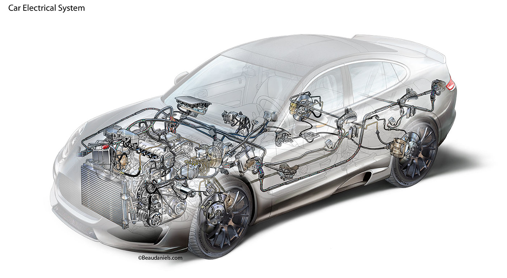

Электросистема современного автомобиля - это сложный комплекс устройств и систем, обеспечивающих работу двигателя, безопасность, комфорт и связь. В среднем современный автомобиль содержит более 1,5 км электропроводки и десятки электронных блоков управления.
Обеспечивает питание электросистемы при неработающем двигателе и помогает стартеру запустить двигатель.
Характеристики: напряжение (12В), емкость (А·ч), пусковой ток (А)
При работе с АКБ соблюдайте осторожность - электролит содержит серную кислоту!
Преобразует механическую энергию двигателя в электрическую для питания систем автомобиля и зарядки АКБ.
Основные параметры: номинальный ток (А), напряжение регулятора (13.8-14.4В)
Электродвигатель, обеспечивающий запуск двигателя. Потребляет большой ток (100-300А) в момент запуска.
В бензиновых двигателях создает искру для воспламенения топливно-воздушной смеси. Состоит из:
Современный автомобиль содержит множество электронных блоков управления:
Включают:
Современный автомобиль оснащен десятками датчиков: